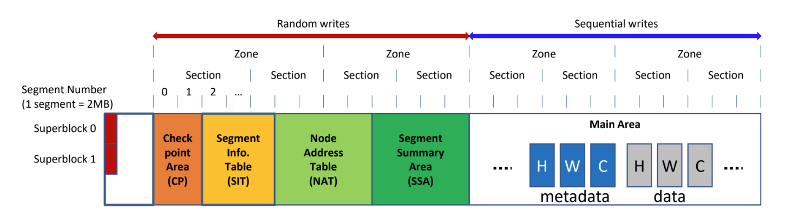

서울대학교 컴퓨터공학과 김진수 교수님의 "고급 운영체제" 강의를 필기한 내용입니다.
다소 잘못된 내용과 구어적 표현 이 포함되어 있을 수 있습니다.
F2FS, Flash Friendly Filesystem
- LFS 에 Flash 를 끼얹음 - 기존 LFS 와의 차이점이 중요하다
- 구조 변화
- Inode Design (NAT, Node ID)
- Multi-head logging
- Adaptive logging (Threaded)
- Fsync-aware roll forward crash recovery
- 이제는 android os 의 기본 fs 가 되면서 여기에의 요구사항에 맞춘 기능들이 많이 추가되고 있다고 한다
Structure overview

- Segment: 가장 작은 단위 - 이놈은 2MB 로 하드코딩되어 있다더라
- Section: cleaning 단위 - 이것은 FTL 의 GC 의 단위와 같다
- 몇개의 segment 을 section 으로 할지 등은 parameter 로 받는다.
- cleaning 시에 valid 를 모은 다음 해당 section 을 TRIM 해서 FTL 에서 GC 할 수 있게 함 - 그래서 section 과 FTL GC unit 이 같아야 하는 것
- Zone: multi-head logging 의 단위
- set-associative 의 set 이 공유하는 log block 을 고려해서 zone 이라는 개념을 넣음?
- hybrid mapping 과 연관된 내용이다
- Random write 구역을 앞으로 몰아버린것도 LFS 와의 차이점
- 기존 LFS 에서는 segment (F2FS 의 segment 와 헷갈리지 말것..) 별로 metadata random write 가 있었는데 F2FS 는 storage 앞에 몰아넣었다.
- F2FS 는 random write 를 몰아넣고 이부분에 대해서는 page mapping 을 하고, 뒤의 sequential write 를 하는 Main area 는 block mapping 을 하는 식의 hybrid mapping 을 사용한다.
- 그리고 아마 HDD 에 비해 NAND flash 에서는 sequential write 가 확실히 이점이 있기 때문에 contiguous sequential write area 를 최대한 많이 가져가려 함이 아닐까
- Segment Info Table (SIT): LFS 의 segment usage table 에 대응
- Segment Summary Area (SSA): LFS 의 segment summary table 대응
- 기존 LFS 에서는 segment (F2FS 의 segment 와 헷갈리지 말것..) 별로 metadata random write 가 있었는데 F2FS 는 storage 앞에 몰아넣었다.
Inode Design
- 우선 inode 가 4K 로 증량되었다.
- 남는 공간에는 xattrs 를 저장할 수 있도록 함
- 원래 POSIX 표준에는 file 에 추가적인 임의의? metadata 를 넣을 수 있는 xattrs 기능이 있고
- 이것을 지원하기 위한 것
- 남는 공간에는 xattrs 를 저장할 수 있도록 함
Wandering Problem
- 원래 inode 에서는 (checkpoint region)-(inode map)-(file inode)-(indirect block)-(direct block)-(data block) 으로 연결되어 있는데
- (data block) 이 바뀌면 저것 전체가 다 바뀐다
- 뭐가 하나 변경되면 새로 append 되어 포인터가 바뀌므로 Root 까지 올라가며 연쇄적으로 업데이트해야 되는 것과 invalid block 을 나중에는 지워야 하는 등의 문제가 있다
- Cascade update problem 이라고도 불림
NAT, Node ID
- F2FS 에서는 이것을 해결하기 위해 Node 와 NAT 를 도입한다.
- Inode 만 ID 와 주소를 mapping (inode map) 하는 것이 아니라,
- Direct block 과 Indirect block 도 전부 Node 라는 이름으로 퉁치고 이것을 ID-주소 매핑 (이것이 Node Address Table 이다.) 을 하여 위치를 찾아가는 방식을 사용하자는 것.
- 그럼 append 로 인해 주소가 바뀌어도 이 NAT 에서만 바꾸면 되니까 아주 나이스
- 조금 추상화해서 표현해보면, 기존의 방식은 physical address 만 사용했다고 할 수 있다.
- 그리고 f2fs 에서는 이 physical address 와 logical address 를 섞어 쓰자는 아이디어
- logical address 만 쓰면 또 mapping 의 크기가 너무 커지는 등의 문제가 있다.
- 그래서 적당히 끊고 거기서부터 logical <-> physical 을 전환하는 것이고
- f2fs 에서는 direct node 에서 끊어서 direct node 를 참조할때는 logical, 이것에서 data block 을 참조할 때는 physical address 를 사용하는 것
- 생각해 봐야 할 것은 flash level 의 pba ppa 를 fs 이 알수는 없으니 여기서의 physical addr 은 lba 를 말한다
- 그리고 logical addr 는 이 lba 를 한번 더 추상화 한 것이라 생각하면 될듯
- direct node 는 어쩔 수 없이 append update 를 해야 한다
- 마찬가지로 data block 이 inode 에 바로 붙어있으면 inode 도 바꾸긴 해야 한다
- 이때도 근데 nat 의 inode addr mapping entry 만 바꾸면 됨
- 대부분은 data block 이기 때문에 node 의 개수는 그렇게 많지 않고, 따라서 NAT 도 사이즈가 그리 크지 않다
Adaptive Logging
- Logging 방식을 용량에 따라 다르게 선택하는 방법.
- 용량이 많을 때는 그냥 sequential 하게 쭉쭉 쓰지만 (normal log, append log)
- 용량이 부족하면 어쩔 수 없이 중간중간의 hole 에 채워넣는 threaded logging 을 수행해 overwrite 를 한다.
Multi-head Logging
- FTL 수준에서는 정보가 별로 없기 때문에 hot cold 구분이 힘들지만
- FS 수준에서는 metadata, file type, file extension 등의 구분이 가능하기 때문에 여기서 더 효과적으로 hot cold 구분을 할 수 있다.
- 따라서 F2FS에서는 metadata 와 data 각각에 대해 hot-warm-cold 로 구분해 다른 zone 에 logging 을 한다.
- 이것도 LFS 와의 차이점이다
- LFS 에서는 하나의 큰 logging 공간을 사용했지만, F2FS 에서는 logging 공간을 파일 타입과 hotness 에 따라 6개의 종류를 사용하는 것.
- 그리고 그 단위가 zone 이 되는 것이다.
- 이것은 디스크를 사용할 때는 힘들고, ssd 라서 가능한 것이다.
- 만약 디스크에서 multi head 를 하게 되면 다른 종류의 log 을 찾으러 가는 seek 이 계속 발생하기 때문에 이것이 힘들지만
- SSD 에서는 die 나 plane 이 있기 때문에 parallel 이 가능하다
- 다만 page mapping 의 경우에는 overwrite 시에 다른 type 의 zone 으로 옮겨 zone 간의 데이터가 다 섞이기 때문에 hotness 구분이 의미가 없다.
- 즉, multi-head log 는 hybrid mapping 이기 때문에 가능한 거랜다
Fsync-aware Roll Forward
#draft 이부분 LFS 와 같이 좀 더 봐야 한다..
- crash recovery - lfs 와 거의 유사
- fsync 등이 되면 checkpoint 생성, checkpoint 도 2개 유지해서 checkpoint gen fail 방어
- nat, sit journal - 자주 바뀌는 nat 와 sit 의 entry 의 경우에는 nat, sit 를 바로 바꾸는 것이 아니고 변경점을 journaling 해놓았다가 checkpoint 생성시에 같이 저장
- 그리고 어느 시점에 nat, sit 에 반영
- memory copy 에는 전부 반영이 되고 이것을 storage 에 반영하지 않는 상태로 두다가 나중에 journal 이 너무 커지면 그때 반영?
- nat, sit 도 각각 2개씩 유지하고 어느것이 최신인지 bitmap 으로 관리
- fsync
- SQLite 에서는 fsync 로 commit 을 하는데
- fsync 에서는 checkpoint 를 생성하며 너무나 시간이 많이 걸리는 상황이 발생
- sync 가 내려오면 일관된 상태를 전부 맞추기 위해 checkpoint 가 필요하지만
- fsync 에서는 굳이 checkpoint 를 생성할 필요는 없다고 한다.
- fsync 가 주로 내려오기 때문에 불필요한 metadata sync 는 배제하고 나중에 recovery 시에 반영하는게 주요 아이디어이다.
- fsync 가 내려오면 변경된 node block 에는
fsyncflag 를 세워 놓고 nat 등에는 반영하지 않고 - 나중에 recovery 시에 살펴보면서 복구할 수 있는 것은 복구하고 뭔가 이상하면 전부 버리기
- ext4 에서는 data block 만 fsync flag 를 하면 되지만 f2fs 에서는 data block 과 direct node 를 모두 fsync flag 를 찍기 때문에 더 성능이 나빠질 수도 있다더라